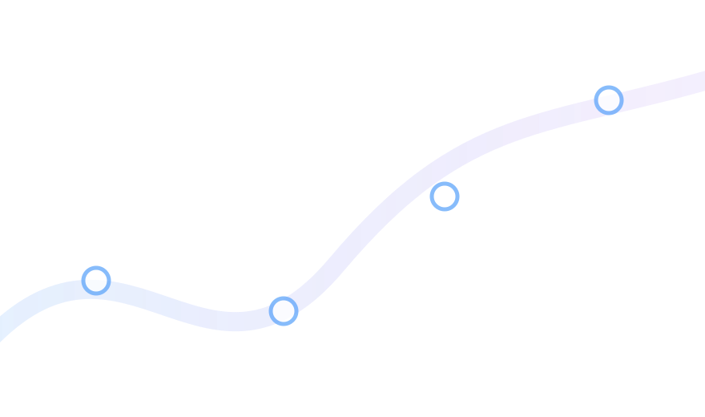
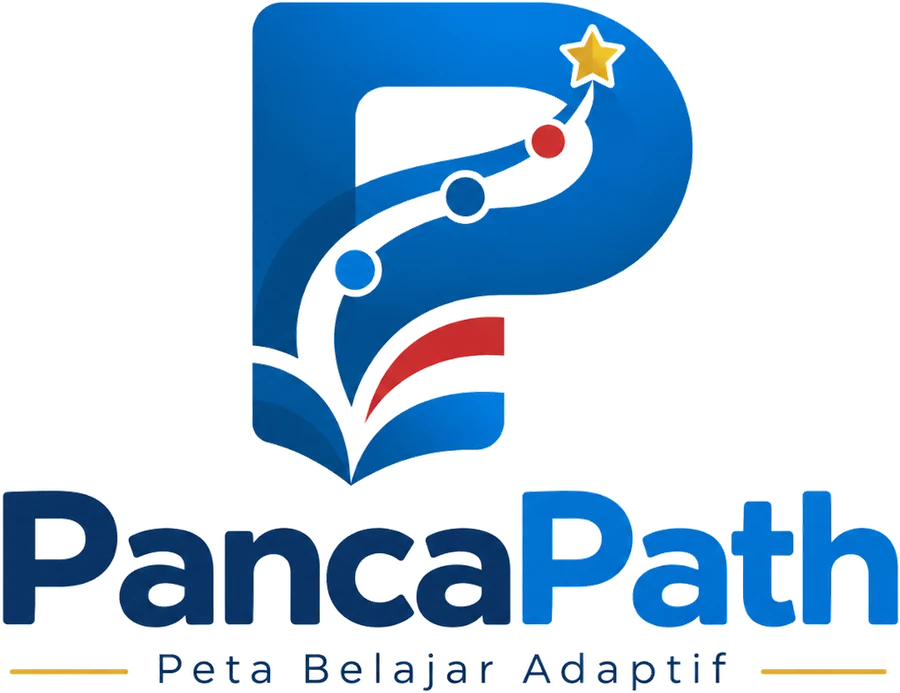

Mulai dari data
Asesmen Awal
Peserta didik memulai dari cek kesiapan singkat yang menentukan kadar dukungan awal.


Pendidikan Pancasila • Kelas VIII • Pembelajaran AdaptifPancaPath memanfaatkan asesmen awal untuk memberi dukungan belajar yang berbeda, tanpa membedakan tujuan akhir setiap peserta didik.

PancaPath menghubungkan asesmen, dukungan adaptif, dan tujuan pembelajaran dalam satu perjalanan yang sederhana.
Peserta didik memulai dari cek kesiapan singkat yang menentukan kadar dukungan awal.
Eksplorasi, Penguatan, dan Tantangan memberi bantuan berbeda tanpa memberi label kemampuan.
Semua jalur berakhir pada Misi Bersama dan asesmen akhir C4–C6 yang sama.
Ketiga jalur tetap mengarah pada kompetensi yang sama. Perbedaannya terletak pada kadar dukungan dan kompleksitas kegiatan belajar.
Menganalisis hubungan perilaku dengan nilai Pancasila serta menjelaskan alasan keterkaitannya.
Mengevaluasi alternatif penyelesaian berdasarkan martabat manusia, persatuan, dan musyawarah.
Merancang solusi yang memuat tindakan, pelaksana, waktu, dan indikator keberhasilan.
Pilih rombel dan nomor peserta. PancaPath akan membuat kode otomatis, misalnya VIII-A-01. Nama lengkap tidak dibutuhkan.
Tiga pertanyaan berikut diadaptasi dari asesmen diagnostik RPPM. Hasilnya menentukan titik awal dukungan belajar, bukan label kemampuan.
Jalur tidak menunjukkan pintar atau tidak pintar. Jalur hanya menentukan kadar dukungan belajar yang diberikan pada titik awal.
Kenali Nilainya
Analisis Masalahnya
Rancang Solusinya
Setelah checkpoint jalur selesai, semua peserta didik bertemu pada misi yang sama. Fokusnya adalah menerapkan nilai Pancasila melalui tindakan nyata di kelas.
Selesaikan checkpoint pada jalur hasil asesmenmu terlebih dahulu.
Semua jalur mengerjakan kasus akhir yang sama untuk melihat transfer kemampuan C4, C5, dan C6.
Simpan Misi Bersama terlebih dahulu.
Refleksi membantu peserta didik menyadari pemahaman, tindakan, dan bantuan yang masih diperlukan. Pada versi berikutnya bagian ini dapat dihubungkan ke Google Form Refleksi Akhir.
Setelah mengirim Google Form B, kembali ke tab PancaPath lalu klik “Saya Sudah Mengirim Form B”.
PancaPath tidak mengelompokkan peserta didik secara permanen. Hasil asesmen awal menentukan dukungan awal. Setelah checkpoint, semua peserta didik melanjutkan ke Misi Bersama dan asesmen akhir yang sama.